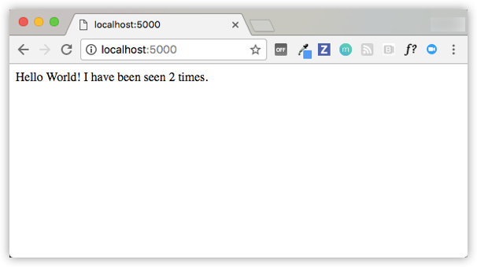

$ docker-compose up Creating network "composetest_default" with the default driver Creating composetest_web_1 ... Creating composetest_redis_1 ... Creating composetest_web_1 Creating composetest_redis_1 ... done Attaching to composetest_web_1, composetest_redis_1 web_1 | * Running on http://0.0.0.0:5000/ Press CTRL+C to quit redis_1 | 1:C 17 Aug 22:11:10.480 # oO0OoO0OoO0Oo Redis is starting oO0OoO0OoO0Oo redis_1 | 1:C 17 Aug 22:11:10.480 # Redis version=4.0.1, bits=64, commit=00000000, modified=0, pid=1, just started redis_1 | 1:C 17 Aug 22:11:10.480 # Warning: no config file specified, using the default config. In order to specify a config file use redis-server /path/to/redis.conf web_1 | * Restarting with stat redis_1 | 1:M 17 Aug 22:11:10.483 * Running mode=standalone, port=6379. redis_1 | 1:M 17 Aug 22:11:10.483 # WARNING: The TCP backlog setting of 511 cannot be enforced because /proc/sys/net/core/somaxconn is set to the lower value of 128. web_1 | * Debugger is active! redis_1 | 1:M 17 Aug 22:11:10.483 # Server initialized redis_1 | 1:M 17 Aug 22:11:10.483 # WARNING you have Transparent Huge Pages (THP) support enabled in your kernel. This will create latency and memory usage issues with Redis. To fix this issue run the command 'echo never > /sys/kernel/mm/transparent_hugepage/enabled' as root, and add it to your /etc/rc.local in order to retain the setting after a reboot. Redis must be restarted after THP is disabled. web_1 | * Debugger PIN: 330-787-903 redis_1 | 1:M 17 Aug 22:11:10.483 * Ready to accept connections
如果您在Mac或Windows上使用Docker Machine，请使用docker-machine ip MACHINE_VM获取Docker主机的IP地址。 然后在浏览器中打开http://MACHINE_VM_IP:5000
您可以在浏览器中看到一条消息：
Hello World! I have been seen 1 times.
刷新页面
数字会增长
Hello World! I have been seen 2 times.

切换到另一个终端窗口
docker image ls REPOSITORY TAG IMAGE ID CREATED SIZE composetest_web latest e2c21aa48cc1 4 minutes ago 93.8MB python 3.4-alpine 84e6077c7ab6 7 days ago 82.5MB redis alpine 9d8fa9aa0e5b 3 weeks ago 27.5MB
$ docker-compose up -d Starting composetest_redis_1... Starting composetest_web_1...
$ docker-compose ps Name Command State Ports ------------------------------------------------------------------- composetest_redis_1 /usr/local/bin/run Up composetest_web_1 /bin/sh -c python app.py Up 5000->5000/tcp